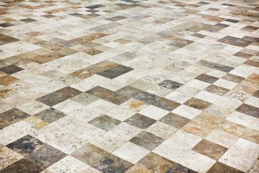
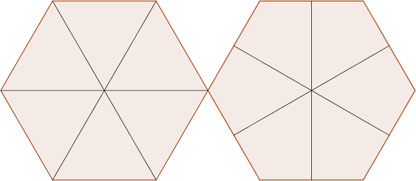
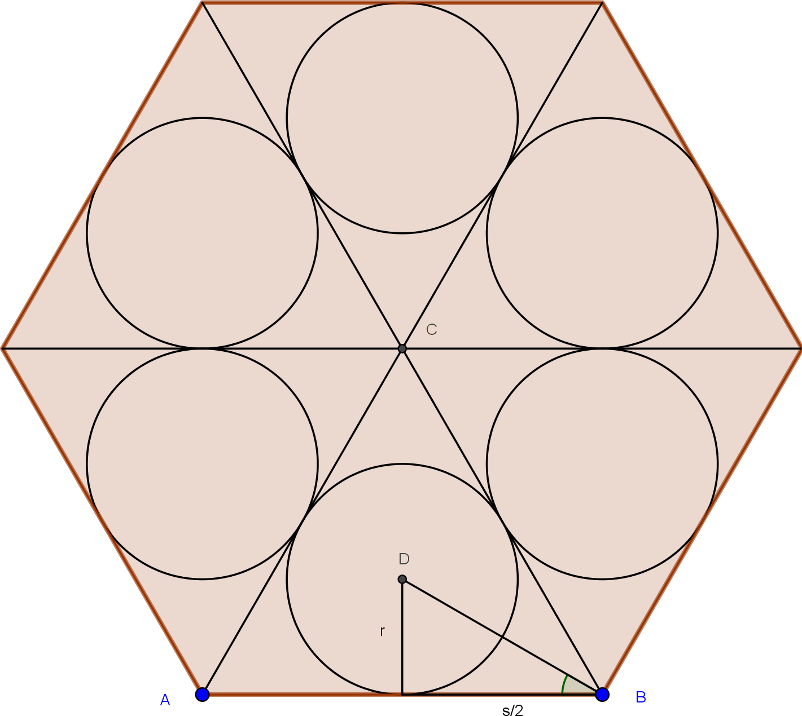
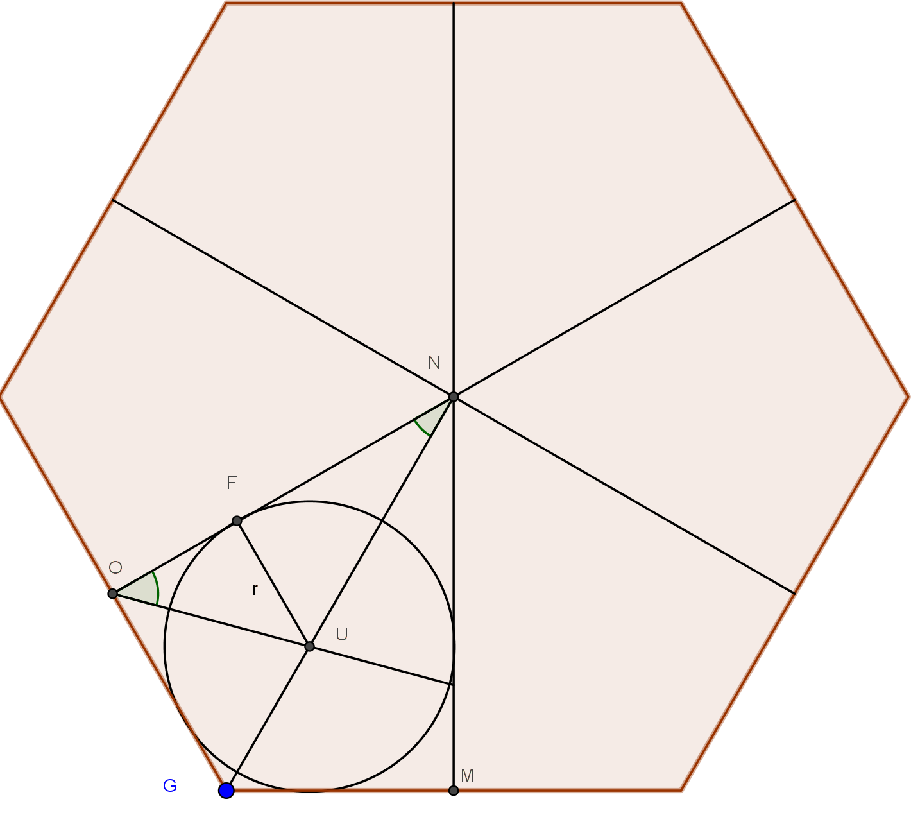
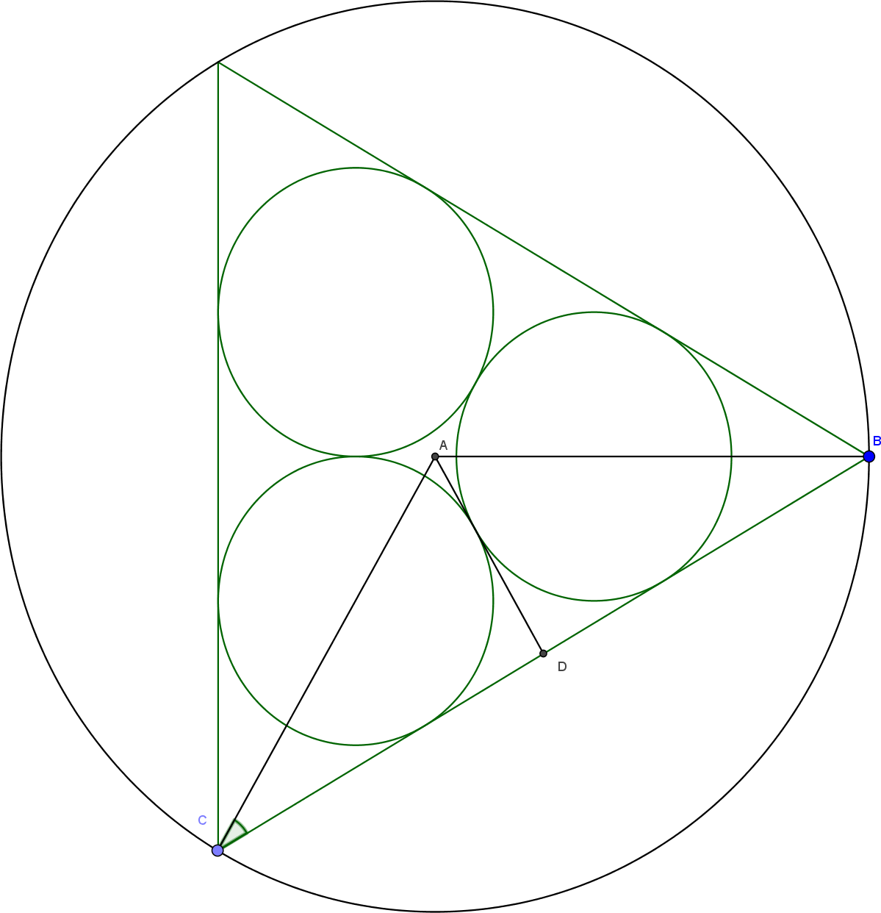
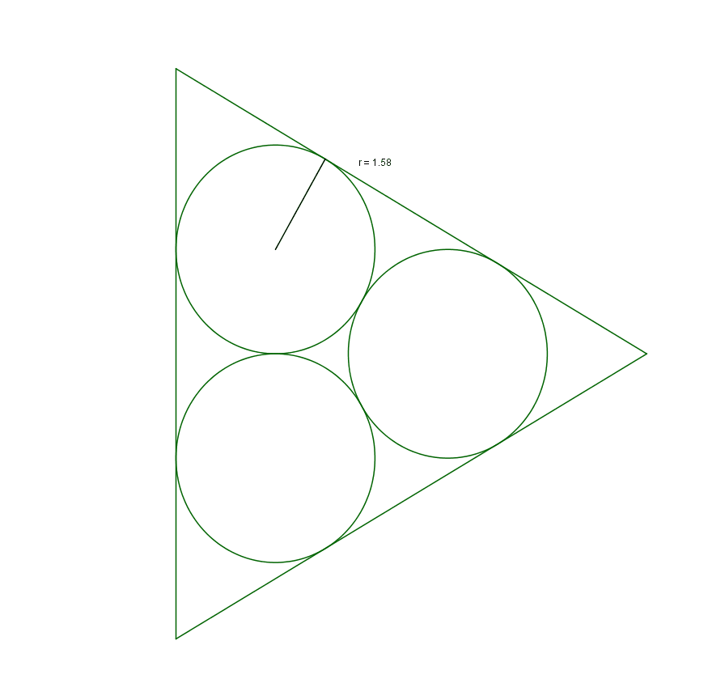

If $n$ identical circles are packed into a regular polygon with $n$ sides of length $s$, what will be their maximum radius $r$?

In order to pack identical circles into the polygon, the polygon must be divided into $n$ identical regions in which to pack a single circle of maximum size. There are two methods to go about dividing an $n$ sided polygon into $n$ identical regions: into $n$ triangles or $n$ kites. The triangle method results from the bounds created by the angle bisectors and the kite from the perpendicular bisectors.

For the triangle method, the largest packed circle in each triangle will be the incircle which will be centered at the intersection of the angle bisectors of each triangle. Given that the measure of the polygon's interior angles is $\frac{180(n-2)}{n}$, angle $DBA$ will be a quarter of that value: $\frac{45(n-2)}{n}$. Therefore the radius $r$ of each packed circle in the polygon is given by $\frac{s}{2}\cdot tan(\frac{45(n-2)}{n})$

For the kite method, the largest packed circle would need to touch all four sides of the kite. The circle would be centered at the intersection of the kite's angle bisectors.
Since $NOG$ is a right angle, $FOU$ has a measure of 45° making $FO$ equal to $r$.
Given that the measure of angle $FNU$ is equal to $\frac{180}{n}$, $FN$ is equal to $\frac{r}{tan(\frac{180}{n})}$.
Therefore, $ON = FO + FN = r + \frac{r}{tan(\frac{180}{n})}$.
Since $OG = \frac{s}{2}$, $ON = \frac{s}{2tan(\frac{180}{n})}$.
Hence, $r + \frac{r}{tan(\frac{180}{n})}=\frac{s}{2tan(\frac{180}{n})}$ making $r=\frac{s}{2tan(\frac{180}{n})+2}$.

Rather than having a constant side length, the polygons can be inscribed in a circle of constant radius $R$. As the polygon's interior angle is an inscribed angle of the circle, angle $CAB$ is twice its measure. Therefore, the sidelength of the polygon is given by the expression: $2Rsin(\frac{180(n-2)}{n})$. Hence, the expressions for $r$ with each method when inscribed in a circle are respectively $\frac{2Rsin(\frac{180(n-2)}{n}}{2}\cdot tan(\frac{45(n-2)}{n})$ and $\frac{2Rsin(\frac{180(n-2)}{n})}{2tan(\frac{180}{n})+2}$.

As can be seen from the animations, the kite method (to the left) leads to larger circles as they touch a greater number of sides (4 rather than 3) for an equal area.